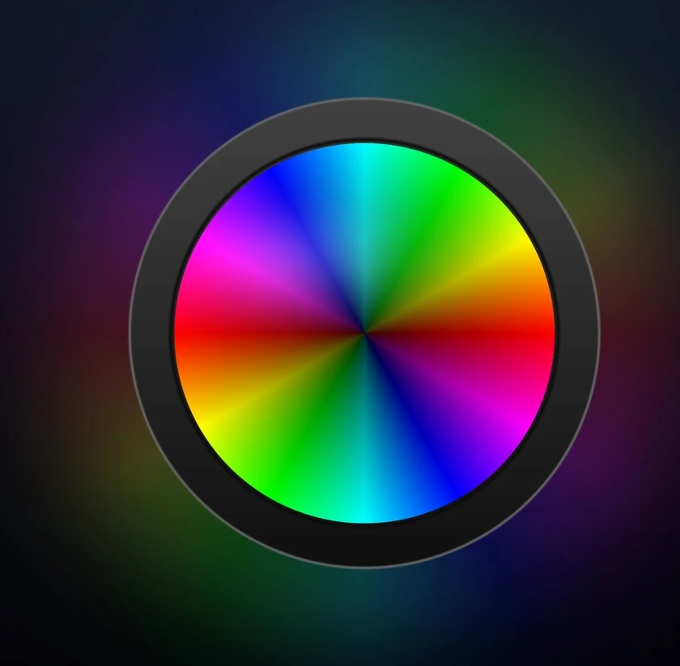
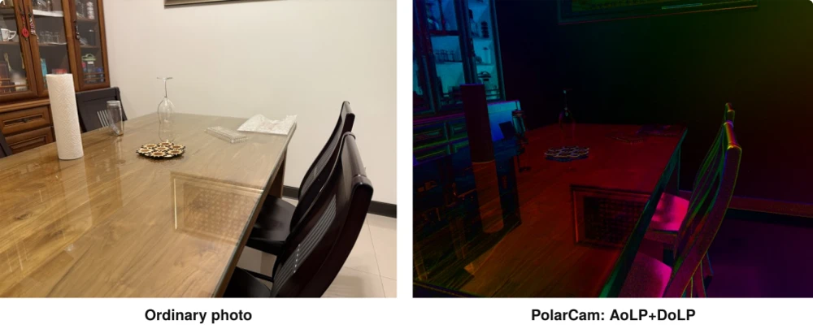
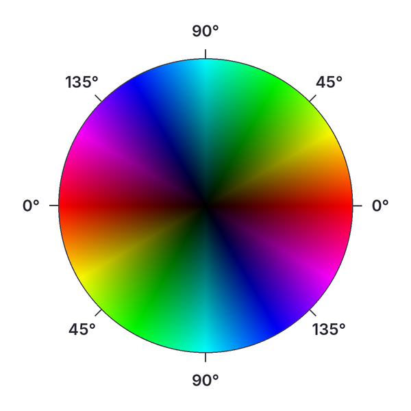
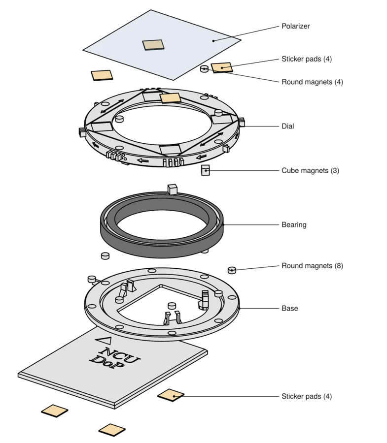
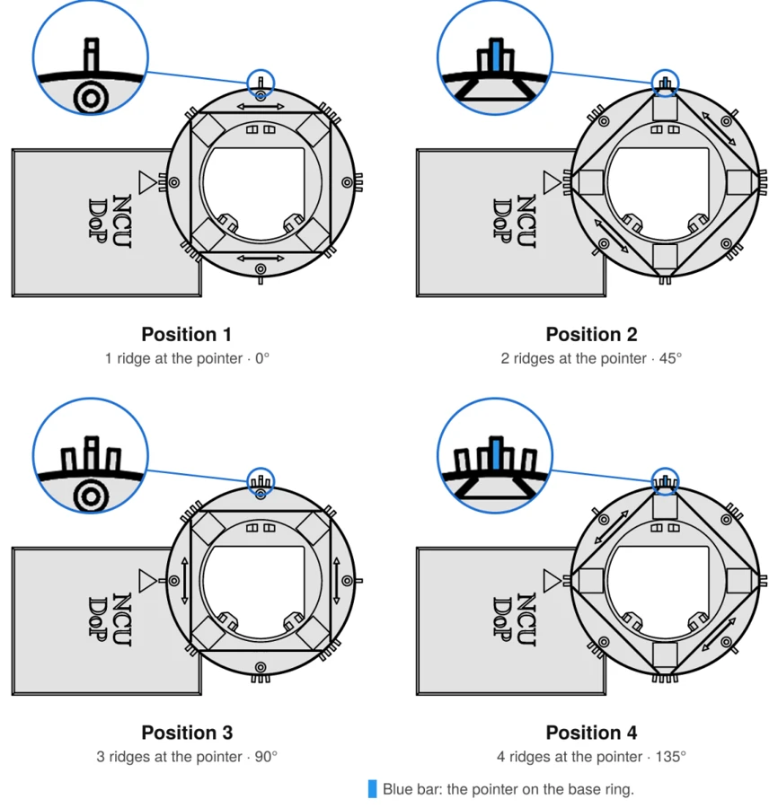

偏振概述
光的偏振描述電場振盪的方向。光在玻璃或水面反射後，常會偏向某個方向振盪。藍天的散射光也可能帶有偏振。把透明塑膠放在 LCD 螢幕前，還可以觀察材料應力造成的偏振變化。
線性偏光片會讓沿著其透光軸振盪的電場分量通過。PolarCam 透過 0°、45°、90° 和 135° 的四張影像，計算每個像素的線偏振度和線偏振角。

四張影像如何算出線偏振？
令 I₀、I₄₅、I₉₀、I₁₃₅ 為四個角度的光強度。在理想條件下，線偏振的 Stokes 參數與線偏振度、線偏振角的關係如下。
PolarCam App 說明
PolarCam 以線性的 RAW（DNG）資料逐像素計算偏振。可切換合併 RGB 或單獨的 R、G、B 通道，放大影像並點選位置讀值。選用自動對齊可修正小幅手震。
| 顯示模式 | 判讀方式 |
|---|---|
| DoLP（線偏振度） | 黑色為 0，白色為 1，分別代表無線偏振和完全線偏振。 |
| AoLP（線偏振角） | 以色彩表示偏振方向，角度以偏光片的 0° 位置為基準。 |
| AoLP + DoLP | 色彩表示角度，亮度表示偏振度。 |

量測會儲存在 iPhone。可選擇保留四張原始 DNG，或從結果畫面匯出 PNG 與 32 位元浮點 TIFF（S₀、S₁、S₂、DoLP、AoLP）。App 需要 iOS 15.6 或更新版本，並使用支援 RAW（DNG）的 iPhone 相機。
在相機設定中，可降低取樣解析度以加快運算，或調整快門避免亮部過曝。在已儲存量測清單中，向左滑動可分享或刪除單筆量測，也可用「選取」一次管理多筆。
組裝 PolarCam 轉盤
零件包括底座、轉盤、MagSafe 底板、MagSafe 磁鐵貼片、薄型軸承、12 顆圓磁鐵、3 顆方磁鐵、線性偏光片和 9 片奈米凝膠貼片。組裝時準備尖嘴鉗或小鉗子、美工刀、軟布、細筆與鈍針或牙籤。
套件含小型強力磁鐵，請遠離兒童、寵物、心律調節器及其他植入式醫療裝置。用美工刀修整支撐時，刀口朝外，遠離手部。

- 清除列印支撐用小鉗子移除大塊支撐，再用美工刀修平。確認磁鐵孔與軸承座沒有殘料。
- 壓入圓磁鐵保持 12 顆磁鐵疊在一起，每次從同一端取下一顆，同一面先入孔。底座裝 8 顆，轉盤裝 4 顆，全部壓至與表面齊平。
- 安裝軸承翻轉轉盤，將軸承放入圓形凹槽，再均勻按壓軸承外環，直到貼住止擋。
- 將轉盤裝到底座把轉盤和軸承放到底座上，讓軸承內環套住底座凸台。
- 插入方磁鐵從轉盤中央將 3 顆方磁鐵分別放入卡座，使軸承內環固定在底座上。
- 檢查轉盤沿箭頭轉一圈。每 45° 應卡住一次，一圈共 8 次，轉動時應無摩擦。若某一格出現排斥，從孔後推出裝反的磁鐵並翻面。
安裝偏光片與轉盤
保留保護膜，透過偏光片斜看水平亮面的反光。轉到反光最暗時，在膜上畫一條垂直線，標出透光軸。將轉盤轉到位置 1，放入四片貼片，讓標線平行於轉盤的 ↔ 記號。貼妥後撕去保護膜。
轉盤以 MagSafe 吸附在 iPhone 上。先保留磁鐵貼片兩面的藍色保護膜，拿貼片的兩面分別靠近 iPhone，找出吸得牢的一面。撕掉這一面的保護膜，將它壓入 MagSafe 底板的環形凹槽，尾端放進槽口。在底板的五個方形凹槽各貼一片凝膠貼片，撕掉第二層藍膜，再把底板壓在底座背面 10 秒。
將轉盤吸附在 iPhone 背面，讓鏡頭窗對準後鏡頭，並在 App 中逐一檢查鏡頭。裝著手機殼也能使用，但手機殼會遮住超廣角畫面的左上角。
首次使用時，保持手機水平，對著水平亮面的反光做一次量測。反光應顯示為水平偏振。如果顯示垂直，將偏光片轉 90° 後重新貼合。
用 App 和轉盤拍攝
- 選鏡頭並設定拍攝間隔橫拿手機，選擇鏡頭並點一下畫面對焦。新手可把 Interval 設成 2 秒或更長。盡量保持光線、場景和手機穩定，拍近物時可用腳架或桌面支撐。
- 從位置 1 開始讓底座指標對準 1 道凸紋（0°），按一次快門。畫面顯示 Photo 1，等第一張自動拍攝。
- 看到下一張提示就轉一格看到 Photo 2 時沿箭頭轉到 45°，並保持不動。依序在 Photo 3、Photo 4 出現時轉到 90°、135°，直到第四張拍完。
- 檢查結果結果畫面可切換顯示模式與色彩通道。若 App 無法確認對齊，或物體邊緣出現大片彩邊，固定好手機後再量一次。

PolarCam 使用手冊
PDF 涵蓋零件清單、組裝圖、MagSafe 安裝、偏光片校正、拍攝與故障排除。目前提供英文版。
下載英文使用手冊（PDF）常見問題
為什麼有些像素顯示洋紅色？
洋紅色標示無法量測的像素。這些像素可能過曝、太暗，或位於四張照片無法對齊的區域。可調整曝光，或將手機放在穩固的支撐物上再拍。
為什麼影像四角變暗？
手機殼會遮住超廣角畫面的左上角，取下手機殼即可看到完整畫面，或改用廣角、長焦鏡頭。若是其他位置變暗，請取下轉盤重新吸附，讓鏡頭窗對準後鏡頭。
為什麼偏振角不對？
檢查四個角度的拍攝順序，再用水平亮面的反光確認偏光片透光軸。
支援
需要協助時，請提供 iPhone 型號、iOS 版本，並在方便時附上匯出的量測。